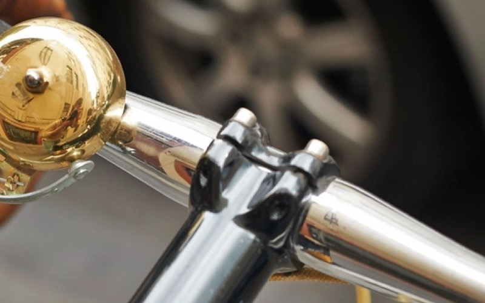
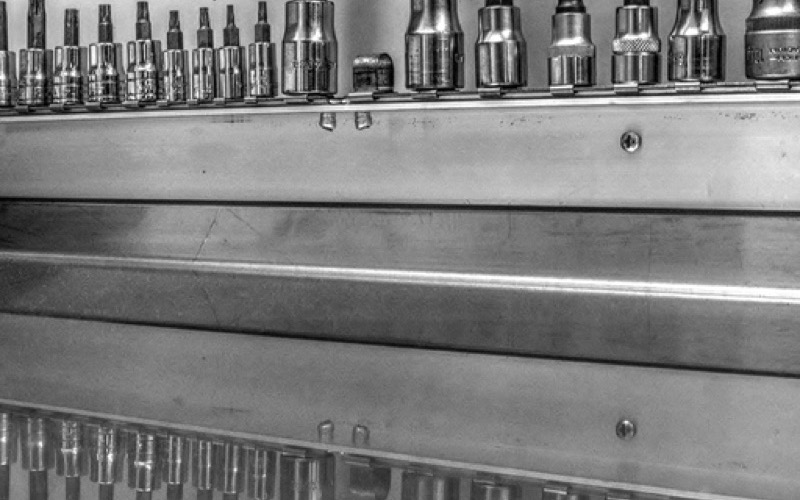

Cities
The town that bought its own high street
When the last two banks closed within a month of each other, a group of residents did something unusual: they stopped writing letters and started raising money.
Cities
When the last two banks closed within a month of each other, a group of residents did something unusual: they stopped writing letters and started raising money.
Cities
Warm banks, job clubs, and the quiet civic infrastructure nobody budgeted for.
Cities
Rent went up, the sofas went out, and something else went with them.

Cities
Four councils, the same consultation, and four different answers.

Making
A Saturday morning in a church hall, and 41 things that didn't go to landfill.
Making
What happens to a city when the soil runs out before the demand does.
One email a week, on Monday morning. What we published, what we're working on, and one thing we read elsewhere and wished we'd written.